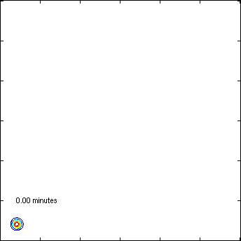
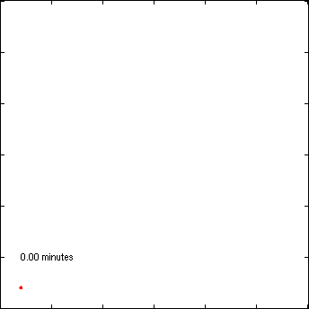

Weak inhibition
 
Left: the time-dependent probability density of a system
describing weak inhibition. Right: two trajectories sampled
from this model. Note how the system essentially defines a lower
dimensional manifold: a very narrow "bumerang" is thus
formed. This means that the sampling in the right picture only
slowly reveals the full behaviour of the system.
The density in the left picture has been obtained by solving an
aggregated form of the system using a very high order
spectral method.
(Plot info: each axis tick is 500 molecules and the contour levels
have been chosen by Matlab)
References
S. Engblom: Spectral Approximation of Solutions to the Chemical
Master Equation, in J. Comput. Appl. Math.
229(1):208--221,
2009: (doi)
S. Engblom: Galerkin Spectral Method applied to the
Chemical Master Equation, in Commun. Comput. Phys.
5(5):871--896,
2009: (abstract), (pdf).
Stefan Engblom
Last modified: Fri Sep 6 14:54:19 CEST 2024